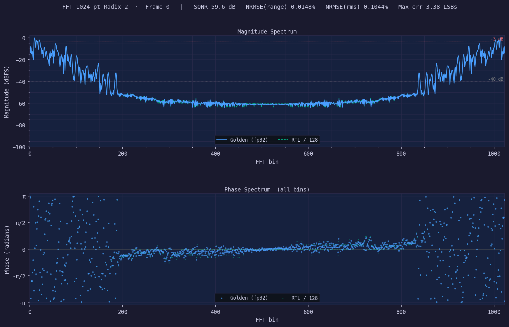
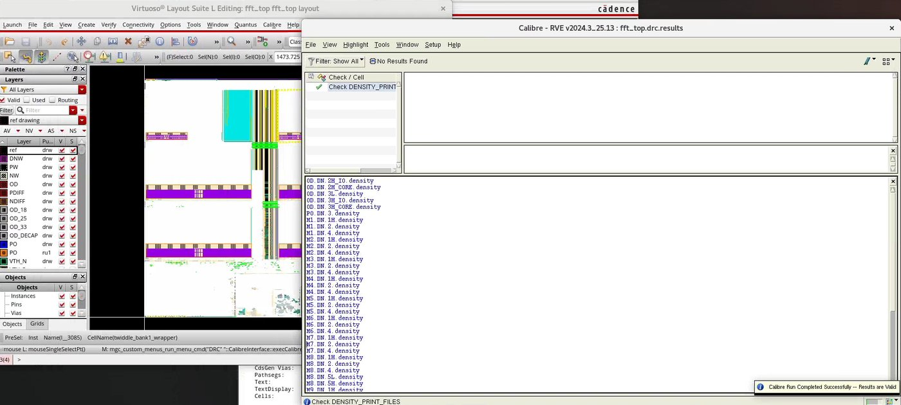

03Silicon I've built
 Top-level layout — SRAM ping-pong banks flanking the logic spine (TSMC N65)
Top-level layout — SRAM ping-pong banks flanking the logic spine (TSMC N65)
1024-Point FFT Engine — RTL to DRC/LVS-Clean Sign-off
208.7 MHz post-APR · 0.41 mm² · 5.49 pJ/sample · 70.6 dB SQNRMemory-based radix-2 engine in Verilog built around four data SRAMs organized as two complex ping-pong banks — one bank sources each FFT stage while the other receives, letting a single butterfly datapath serve all ten stages (5,120 butterflies per 1024-point frame). Closed all setup/hold violations by adding register staging between the controller/address-generation logic and the memory interface, verified in PrimeTime STA. Post-APR power was signed off with full VCD activity annotation — 13,696 of 13,696 nets — and spectral accuracy was validated across ten frames against a floating-point golden model (Q1.15 in, Q9.7 out), holding sub-0.15% NRMSE per frame.

RTL vs. golden model — magnitude & phase spectra
DRC-clean sign-off — Calibre RVE 8-bit adder chain layout — Cadence Virtuoso
8-bit adder chain layout — Cadence Virtuoso
8-bit Processor ASIC
>112 MHz target exceeded · transistor-level signoffFull-custom accumulator-based core designed and laid out at the transistor level with Sadiq Sobur: transmission-gate D-latch registers, an 8-bit ripple-carry adder with XOR-conditioned two's-complement subtract, a three-stage logarithmic shifter, an 8×8 SRAM behind a row decoder and column mux, and a pseudo-NMOS PLA controller decoding a 6-bit instruction word. Two-phase φ1/φ2 clocking with a balanced buffer tree and a bitslice floorplan; verified with Spectre and PrimeTime signoff STA.